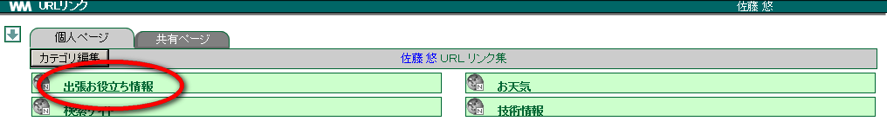

12. URL リンク¶
12.1. 共有ページ¶
「共有ページ」は管理者のみが登録できます。ユーザーはリンクされているホームページをみることができます。
メニューの
 をクリックします。
をクリックします。[共有ページ] のタブをクリックします。

カテゴリ名の左隣のアイコン
 を確認し、リンク名をクリックします。
を確認し、リンク名をクリックします。
リンク先のホームページが開きます。
Note
地球のアイコン の意味
 ・・・ カテゴリの下にリンクが設定されているが、現在は非表示の状態であることを指します。クリックすると表示されるようになります。 ・・・ カテゴリの下にリンクが設定されており、現在表示されていることを指します。クリックすると非表示になります。
・・・ カテゴリの下にリンクが設定されているが、現在は非表示の状態であることを指します。クリックすると表示されるようになります。 ・・・ カテゴリの下にリンクが設定されており、現在表示されていることを指します。クリックすると非表示になります。 ・・・ カテゴリの下にリンクが設定されていないことを指します。
・・・ カテゴリの下にリンクが設定されていないことを指します。12.2. 個人ページ¶
「個人ページ」では、ユーザーが任意にカテゴリやリンクの編集を行うことができます。 [1] カテゴリやリンクの編集は、個人用設定の URL リンクと同様です。
12.2.1. リンクからページを開く¶
メニューの
をクリックします。[個人ページ] のタブをクリックします。
カテゴリ名の左隣のアイコン
を確認し、リンク名をクリックします。
12.2.2. カテゴリを設定する¶
「URL リンク集」のカテゴリを設定します。カテゴリ別に URL リンクを作成していきます。
メニューの
をクリックします。カテゴリ編集 をクリックします。

詳しい手順は 設定画面(個人) の URL カテゴリを設定する を参照してください。
12.2.3. カテゴリを編集する¶
登録したカテゴリは、名前を変更したり、順番を変更したりすることができます。
メニューの
をクリックします。カテゴリ編集 をクリックします。

詳しい手順は 設定画面(個人) の 登録した URL カテゴリを変更する を参照してください。
12.2.4. カテゴリの表示順序を変更¶
詳しい手順は 設定画面(個人) の カテゴリの表示順序を変更 を参照してください。
12.2.5. カテゴリを削除する¶
登録したカテゴリを削除しましょう。削除するとそのカテゴリに登録しているリンクも削除されます。元に戻すことはできません。
メニューの
をクリックします。カテゴリ編集 をクリックします。
詳しい手順は 設定画面(個人) の 登録した URL カテゴリを削除する を参照してください。
12.2.6. リンクを設定する¶
カテゴリにリンクを設定します。業務でよく閲覧するホームページなど、どんどん登録しましょう。
メニューの
をクリックします。リンクを設定したいカテゴリのカテゴリ名をクリックします。

詳しい手順は 設定画面(個人) の URL リンクを設定する を参照してください。
12.2.7. リンクを変更する¶
設定したリンクの内容を変更しましょう。
メニューの
をクリックします。変更したいリンクがあるカテゴリのカテゴリ名をクリックします。

詳しい手順は 設定画面(個人) の 登録した URL リンクを変更する を参照してください。
12.2.8. リンクの表示順序を変更する¶
詳しい手順は 設定画面(個人) の リンクの表示順序を変更する を参照してください。
12.2.9. リンクを移動またはコピーする¶
カテゴリ間でリンクを移動したりコピーしたりできます。
メニューの
をクリックします。移動・コピーしたい URL リンクがあるカテゴリの「カテゴリ名」をクリックします。
詳しい手順は 設定画面(個人) の リンクを移動またはコピーする を参照してください。